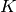

Clustering¶
The clustering procedure splits the probe into groups of four sites apiece, clusters separately on every group, and then combines the results. Note that the spike detection is only performed once, so that the same spike is clustered multiple times. Using the clusterings on separate subsets of spikes, the program infers a final, global clustering on the entire set of spikes. Each spike is classified into only one of these final clusters.
Cluster-subsets-and-merge procedure¶
- The clustering procedure can be summarized as follows.
- Select a set of channel groups. Each channel group is an overlapping subset of channels, and the channel groups overlap (see below example).
- For each channel group, select the spikes that are superthreshold on at least one of those channels.
- Cluster the spikes on each channel group
- Combine these clusterings on the separate groups into a single clustering, where each spike is assigned to a single cluster.
Each step will be explained in detail below.
The selection of channel groups depends on the type of probe being considered
- 0-dimensional probe–several close sites, e.g. a tetrode. Then there is only one group, which contains all of the channels.
- 1-dimensional probe–a shank with a single column of channels. Then the groups are every sequence of four consecutive channels, e.g. [0,1,2,3], [1,2,3,4], [2,3,4,5], ...
- 2-dimensional probe–a two-dimensional array of recording sites. We generate the Delaunay triangulation of the recording sites. Then every pair of adjacent triangles yields a 4-channel subset.

Groups:
[[‘SP1’, ‘SP2’, ‘SP3’, ‘SP4’], [‘SP2’, ‘SP3’, ‘SP4’, ‘SP5’], [‘SP3’, ‘SP4’, ‘SP5’, ‘SP6’], [‘SP4’, ‘SP5’, ‘SP6’, ‘SP7’],[‘SP5’, ‘SP6’, ‘SP7’, ‘SP8’], [‘SP6’, ‘SP7’, ‘SP8’, ‘SP9’], [‘SP7’, ‘SP8’, ‘SP9’, ‘SP10’], [‘SP8’, ‘SP9’, ‘SP10’, ‘SP11’],[‘SP9’, ‘SP10’, ‘SP11’, ‘SP12’], [‘SP10’, ‘SP11’, ‘SP12’, ‘SP13’], [‘SP11’, ‘SP12’, ‘SP13’, ‘SP14’], [‘SP12’, ‘SP13’, ‘SP14’, ‘SP15’],[‘SP13’, ‘SP14’, ‘SP15’, ‘SP16’], [‘SP17’, ‘SP14’, ‘SP15’, ‘SP16’], [‘SP17’, ‘SP18’, ‘SP15’, ‘SP16’], [‘SP17’, ‘SP18’, ‘SP19’, ‘SP16’],[‘SP17’, ‘SP18’, ‘SP19’, ‘SP20’], [‘SP18’, ‘SP19’, ‘SP20’, ‘SP21’], [‘SP19’, ‘SP20’, ‘SP21’, ‘SP22’], [‘SP20’, ‘SP21’, ‘SP22’, ‘SP23’],[‘SP21’, ‘SP22’, ‘SP23’, ‘SP24’], [‘SP22’, ‘SP23’, ‘SP24’, ‘SP25’], [‘SP23’, ‘SP24’, ‘SP25’, ‘SP26’], [‘SP24’, ‘SP25’, ‘SP26’, ‘SP27’],[‘SP25’, ‘SP26’, ‘SP27’, ‘SP28’], [‘SP26’, ‘SP27’, ‘SP28’, ‘SP29’], [‘SP27’, ‘SP28’, ‘SP29’, ‘SP30’], [‘SP28’, ‘SP29’, ‘SP30’, ‘SP31’]]
For each channel group, we select the subset of spikes that are superthreshold on at least one of those channels. So a typical spike is classified in several channel groups. On each channel group, we cluster using the mixture-of-Gaussians EM algorithm. We use Ken Harris’ KlustaKwik to do the clustering. See Mixture-of-Gaussians EM Algorithm for a discussion of clustering with the EM algorithm.
Next, we must combine these partial clusterings into a global clustering on all channels. Each spike should only appear in one of these final clusters. We use an ad hoc method with the following motivation: a spike that is high-amplitude on one part of probe will be low-amplitude on distant channels, producing a cluster that can’t be isolated on those distant channel groups. We start with the high-amplitude clusters, set them aside as good clusters, and pull those spikes out of the other clusters.
More precisely, let us say we have G channel groups, and each group has clusters. Thus our clusters can be labeled (g,m), where
We calculate the amplitude of each cluster. This is taken to be the peak-to-peak value on the mean waveform of the cluster.
Then we determine the final clustering using the following algorithm. Here is a reference for the notation:
: index for ordered clusters. The clusters are ordered by amplitude.
: the set of points in cluster i.
: the amplitude of the cluster i.
: the (group, cluster number) corresponding to cluster i.: an arbitrary point.
: the total number of clusters, across all channel groups.
Here is the algorithm:
Order the clusters so that .Label every point p as not-taken (as opposed to taken), and create lists good-clusters and bad-clusters.For i from 1 to K:Consider the pointsAssociate with the set of points .Label all points inThe union of all of clusters in bad-clusters is designated as uncategorized noise points, whereas each cluster in good-clusters is associated with a set of points, containing between 80% and 100% of the original points from that cluster.
Thus a large number of clusters, with overlapping subsets of points, is turned into a small set of mutually disjoint, good clusters, and a large number of noise points.
Generalize: classifying new data¶
The generalize-from-raw-data.py script uses the clustering generated from part of the data to classify new spikes. Finding the best-matching cluster is not so straightforward, because
- We only want to use the channels where this spike produces a measurable signal.
- There is a gigantic noise cluster. How do we decide whether to put the point in the best-matching cluster or the noise cluster?
Here’s how we address these issues:
- We want to select one of our channel groups. First we narrow the selection down to the channel groups that contain all of the superthreshold channels of the spike, or as many as possible. Then we select the group where is maximal. is given by the absolute value of the first feature–the first principal component–and is basically equivalent to peak amplitude.
- We define a cutoff for each cluster. When a spike is classified into the most probable cluster, then if the likelihood is below the cutoff for the cluster, then the spike is classified as noise. There are two types of errors that could occur: (I) a noise point is mistakenly classified as belonging to cluster m, and (II) a point from cluster m is mistakenly classified as noise. There is a tradeoff between minimizing (I) errors and (II) errors, so we try to minimize their sum.
We do a new classification, classifying all points into the best matching non-noise cluster. Then we consider the two distributions over likelihood score L:
where is the likelihood of point p, is the set of points classified into cluster m in the new classification, and N is the set of points classified as noise in the old classification.
The cutoff value minimizes the loss function  , defined as
, defined as
If likelihood is below the cutoff , then point p is classified as noise, rather than in the most likely cluster m,